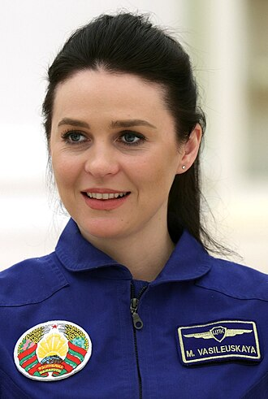
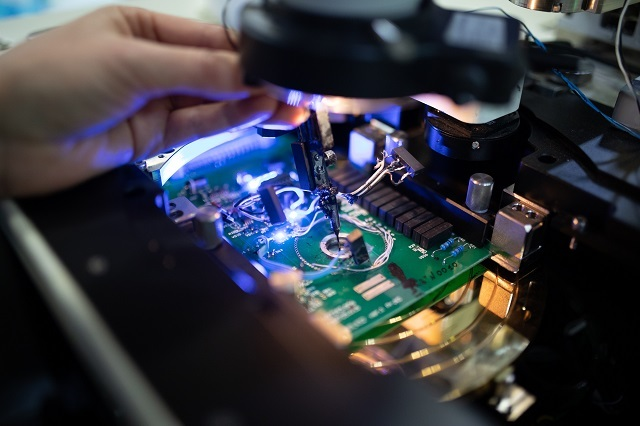
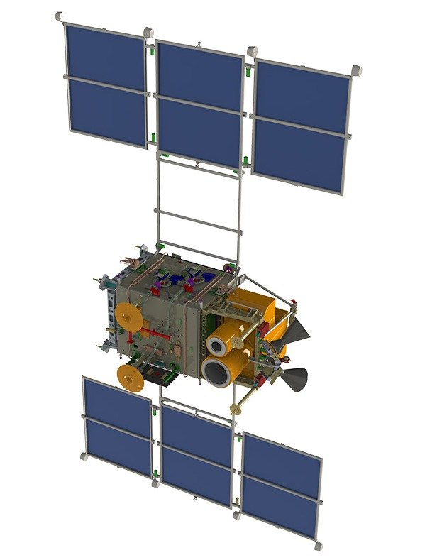
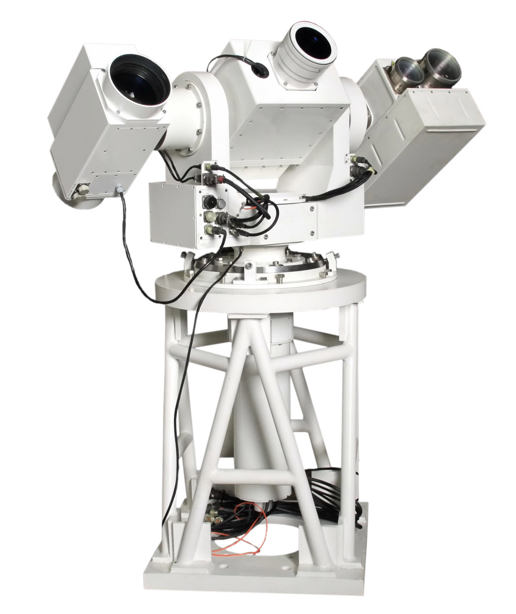

Героический вклад белорусов в освоение космоса
От первых космонавтов до современных спутников — Беларусь всегда была частью звёздной истории человечества
Космическая летопись Беларуси
Здесь вы найдёте информацию о белорусских космонавтах, учёных и разработках, которые помогли человечеству выйти за пределы Земли.

Пётр Климук
Лётчик-космонавт СССР, дважды Герой Советского Союза. Совершил три космических полёта. Родился в Брестской области. Общее время проведённое в космосе — более 78 суток.

Владимир Коваленок
Дважды Герой Советского Союза. Уроженец Минской области. Участник трёх экспедиций на орбитальные станции. Провёл в космосе более 216 суток.

Марина Василевская
Первая женщина-космонавт суверенной Беларуси. Участница космического полёта в 2024 году. Символ возрождения белорусской космонавтики.
🚀 Белорусские технологии, покорившие космос

Микроэлектроника
НПО «Интеграл» разрабатывает радиационно-стойкие микросхемы, которые работают в спутниках и на МКС. Белорусская электроника выдерживает экстремальные температуры и космическую радиацию.

Дистанционное зондирование Земли
Белорусский космический аппарат (БКА) запущен в 2012 году. Передаёт снимки высокого разрешения для мониторинга сельского хозяйства, лесных пожаров, строительства и картографии.

Оптические системы
Предприятие «Пеленг» создаёт уникальные зеркала, лазеры и оптические приборы для космических обсерваторий. Белорусская оптика используется в российских и европейских космических проектах.
🔧 А ещё белорусы создают:
🏆Беларусь входит в число мировых лидеров по производству космической микроэлектроники и оптики. Наши технологии работают на орбите уже более 30 лет!